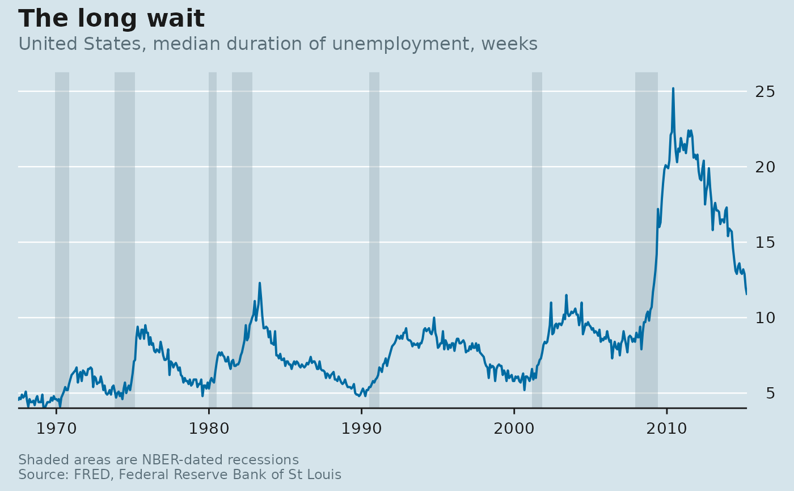

Returns a rectangle annotation spanning the full height of the panel for each recession, to be added before the data layers so the shading sits underneath them.
Usage
annotate_recessions(
data = nber_recessions,
from = NULL,
to = NULL,
fill = "#8FA5B0",
alpha = 0.35
)Arguments
- data
A data frame of recession intervals with
peakandtroughdate columns. Defaults to nber_recessions; pass the result offred_recessions()for a live copy.- from, to
Optional window. Recessions that do not overlap it are dropped, which keeps the x-axis from stretching back to 1857 when the series starts in 1990.
- fill
Band colour.
- alpha
Band opacity.
Examples
library(ggplot2)
ggplot(economics, aes(date, uempmed)) +
annotate_recessions(from = min(economics$date), to = max(economics$date)) +
geom_line(colour = econ_colours("blue"), linewidth = 0.7) +
scale_x_econ_date() +
scale_y_econ() +
labs_econ(
title = "The long wait",
subtitle = "United States, median duration of unemployment, weeks",
note = "Shaded areas are NBER-dated recessions",
source = "FRED, Federal Reserve Bank of St Louis"
) +
theme_econ()
